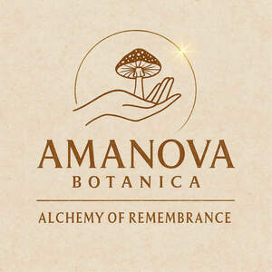

Trade Mark Journal No.2025/046 14 November 2025
UK00004287841 1 November 2025 (1,3,30,35,41,42,44,45)

- Class 1
- Herb extracts, other than essential oils, for use in the manufacture of cosmetics; Botanical extracts for use in making cosmetics; Plant extracts for use in the manufacture of cosmetics; Emulsifiers for use in the manufacture of cosmetics; Chemical preparations for use in cosmetic products; Collagen based ingredients for cosmetic preparations; Raw materials [chemical] for the formulation of cosmetic products.
- Class 3
- Skincare cosmetics; Anti-aging skincare preparations; Anti-ageing moisturiser; Cosmetic moisturisers; Anti-ageing creams [for cosmetic use]; Acne cleansers, cosmetic; After-sun oils [cosmetics]; Anti-ageing serums for cosmetic purposes; Skin care cosmetics; After-sun lotions [for cosmetic use]; Skin recovery creams [cosmetics]; Sunscreens [for cosmetic use]; Cosmetic massage creams; Cosmetic products for the shower; Aromatherapy creams; Organic cosmetics; Facial gels [cosmetics]; Beauty creams for body care; Natural cosmetics; Multifunctional cosmetics; Body gels [cosmetics]; After-shave balms; Balms (Non-medicated -); Salves [non-medicated]; Massage oils and lotions; Bath creams (Non-medicated -); Bath oils (Non-medicated -); Body scrubs [cosmetic]; Cosmetic mud masks; Herbal extracts for cosmetic purposes; Bath herbs; Shower oils; Aromatic oils for the bath; Body massage oils; Mineral oils [cosmetic]; Body oils [for cosmetic use]; Body cleaning and beauty care preparations.
- Class 30
- Non-medicinal herbal infusions; Aromatic teas [other than for medicinal use]; Herb teas, other than for medicinal use; Dried herbs.
- Class 35
- Marketing research in the fields of cosmetics, perfumery and beauty products; Online retail store services relating to cosmetic and beauty products; Online marketing; Mail order retail services for cosmetics; Arranging and conducting of fairs and exhibitions for business purposes.
- Class 41
- Educational services relating to beauty therapy; Arranging of workshops and seminars; Conducting workshops and seminars in self awareness; Organisation of seminars and conferences; Workshops for educational purposes; Workshops for recreational purposes; Providing online training seminars.
- Class 42
- Cosmetics research.
- Class 44
- Alternative medicine services; Ayurveda therapy; Health care relating to relaxation therapy; Cosmetic body care services provided by health spas; Therapeutic treatment of the body; Reiki services; Consultancy provided via the Internet in the field of body and beauty care; Beauty therapy services; Beauty care services; Psychotherapy services; Herbalism.
- Class 45
- Spiritual consultancy.
Antevasin Ltd